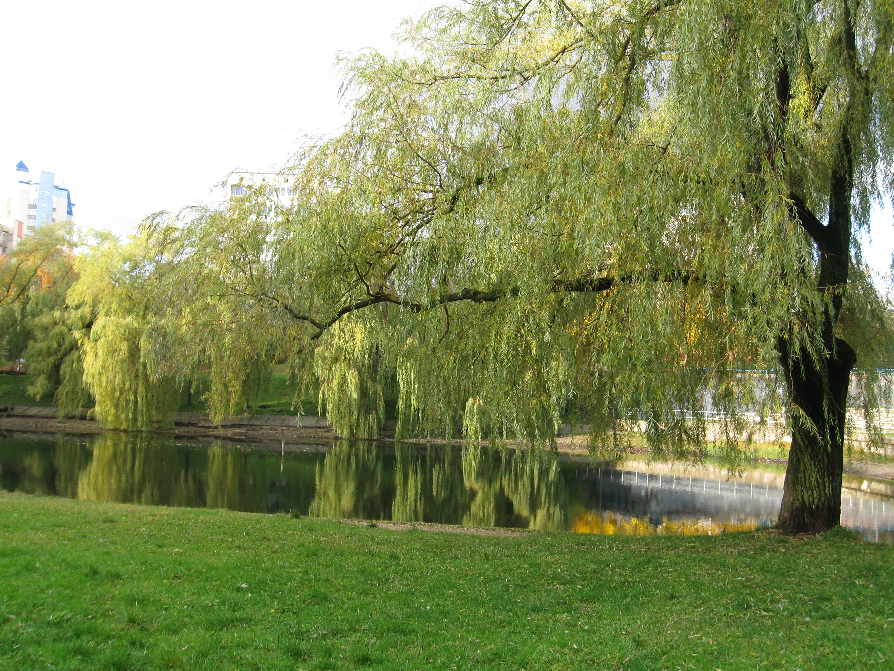
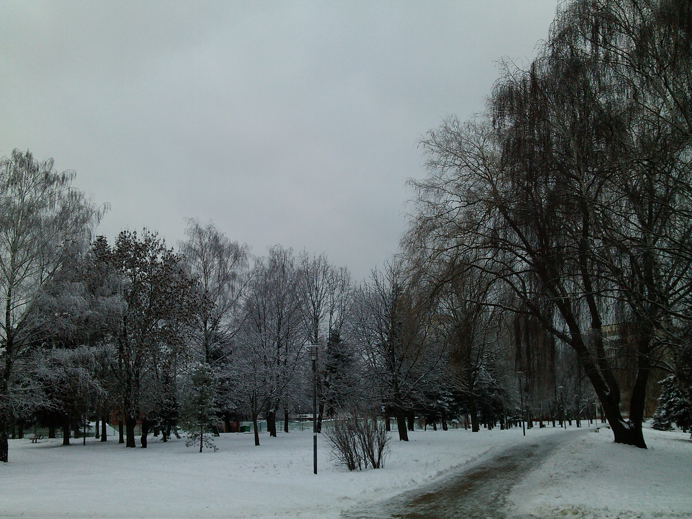

Продается двухкомнатная квартира на Берута, 16-2
Местоположение и инфраструктура
Метро
Риэлторы любят писать о квартирах в соседних домах что они находятся в 5-ти минутах ходьбы до метро.
Но в реальности это 12 минут (меньше километра) до метро обычным шагом (и скриншот с карт яндекса - тому подтверждение).

Наземный общественный транспорт
До ближайшей остановки общественного транспорта (проспект Пушкина) - 6 минут ходьбы.
Удобные маршруты транспорта во все концы города рядом со станцией метро.
Продукты
-
Магазины у дома (2 минуты ходьбы, если не по переходу): Легион маркет, Мясной дворик, Rоял маркет
- Провиант - 4 минуты ходьбы. Избегайте чесночных булок, если не хотите потолстеть ;-)
- Виталюр - 4 минуты ходьбы
- Виталюр (на месте бывшего универсама "Фрунзенский"). Сюда удобно заходить по дороге домой, если идешь с метро.
- Евроопт - 7 минут ходьбы
- Соседи (Раковский Кирмаш)
- Рублевский (давно не был, там уже может Санта)
- Хит-экспресс
-
И другие
Фастфуд
Перекресток на м. Пушкинская часто называют - фастфуд перекресток.
- Макдональдс (м. Пушкинская)
- Бургер-Кинг (м. Пушкинская)
- Додо-пицца (м. Пушкинская)
- Doner King (Раковский Кирмаш)
- Мираж Döner (чуть в стороне от м. Пушкинская)
Промтовары и бытовая химия
- Алекор (м. Пушкинская).
- Мила (Общественный центр ул. Берута).
- Остров Чистоты (Общественный центр ул. Берута).
- "Мир цвета" - лаки и краски (Общественный центр ул. Берута).
Медицина и здоровье
- Детская поликлиника № 16 - прямо в торце дома (ближе некуда).
- Взрослая поликлиника № 20 - 6 минут ходьбы. В настоящее время производится ее реконструкции и расширение.
- Аптека "Белфармация" - 3 минуты ходьбы (Общественный центр ул. Берута)
- Стоматология "Шик Денталь" - 3 минуты ходьбы (Общественный центр ул. Берута)
Физкультура и спорт
-
Спорткомплекс Спартак: девочек на гимнастику привозят со всего города,
для мальчиков - борьба, тяжёлая атлетика, таэквондо, каратэ и др.
-
СДЮШОР по Боксу
-
Бассейн в протезно-ортопедическом центре. В данном центре помимо обычного плавания и аквааэробики,
проводятся занятия по обучению плаванию для детей и взрослых.
-
ФОК "Дорстрой" - также с бассейном и спортзалом находится тоже в пешей доступности.
-
Тренажерный зал Викинг
-
На огороженной от автомобилей территории школ рядом с домом есть стадионы с покрытием, мини-стадион, волейбольно-баскетбольные площадки,
турники и брусья для воркаута. Для младших школьников есть стенка для скалолазания, веревочный городок, кольца и др.
Дошкольные учреждения
- Cанаторный детский сад-начальная школа № 270
- Ясли-сад № 288
- Ясли-Сад № 279
- Ясли-Сад № 221
- Ясли-Сад № 205
- Ясли-сад № 380 - отличный детский сад холдинга Горизонт с бассейном.
Школы
- Средняя школа № 127
- Средняя школа № 96
- Средняя школа № 99
- Подальше находится Гимназия № 27 (информационно-экономическая), которая в 2019 году была признана лучшей в городе.
Релилия:
- Введенская церковь - 15 минут ходьбы.
Социальные учреждения
- ЖЭС №16 (Общественный центр ул. Берута)
- Расчетно-справочный центр №9 (Общественный центр ул. Берута)
- Почтовое отделение №220074 (Общественный центр ул. Берута)
- Почтовое отделение №220092
- Центр социального обслуживания населения Фрунзенского района (Общественный центр ул. Берута)
Банки и банкоматы
- Беларусбанк: отделение и банкомат (Общественный центр ул. Берута)
- Приорбанк: банкомат (Раковский Кирмаш)
- Приорбанк: отделение и банкомат (м. Пушкинская)
- МТБ банк: отделение и банкомат (м. Пушкинская)
Мобильные операторы
- МТС (м. Пушкинская)
- A1/Velcom (м. Пушкинская)
- Life:) (Раковский Кирмаш)
Иное
- Книжный магазин (Общественный центр ул. Берута)
- Парихмахерская (Общественный центр ул. Берута)
- Ремонт одежды (Общественный центр ул. Берута)
- Пункт выдачи Wildberries (Бизнес-центр Пушкинский)
Автовладельцам
Про возможность поставить машину под окнами, а в крайнем случае - на стоянках вдоль ул. Берута или ул.Одоевского мы уже писали.
Что интересно - рядом сделали стоянку с зарядными станциями для электромобилей.
В пяти минутах езды много СТО, шиномонтажей и др.
Сами пользуемся следующими автоуслугами:
- Ручная автомойка на Берута 3а.
- Автозаправка A100 c автоматической автомойкой.
- Хороший шиномонтаж на Бетонном проезде.
На машине - 5 минут до Притыцкого или Второго кольца, по Харьковской - 7 минут до недавно завершенного участка Первого кольца.
Для любителей домашних животных
- Есть официальная площадка для выгула и тренировок
- Для дополнительных тренировок активных собак подальше есть еще одна площадка с множеством оборудования.
Примечание - у нас самих нет домашних животных.
Зеленые зоны отдыха и экология
- Весь район зеленый. (здесь вставить несколько фото)
- В центре микрорайона - большая зеленая зона
-
Тучинский сквер и водоем Мухля. За время нашего проживания активисты добились значительных улучшений - были установлены
лавочки, отреставрированы скульптуры, нанесены красивые граффити.


Статья о жилом районе в СМИ.

Множество фотографий и историю района можно найти в статье на сайте onliner.by
Квартира - см. здесь
Дом и двор - см. здесь